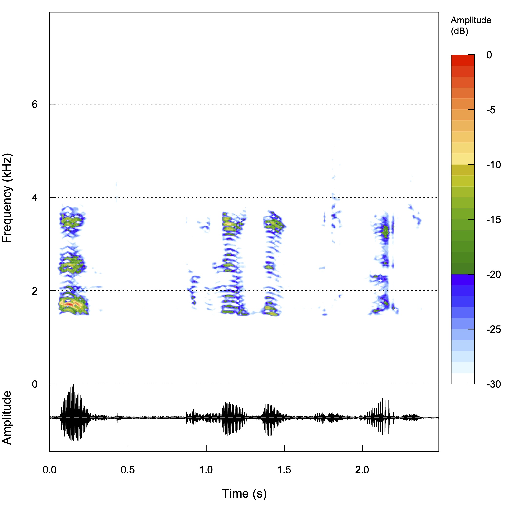

デジタル信号処理
信号処理 - 講義14
(Press ? for help, n and p for next and previous slide)
前回のおさらい
デジタル信号処理
- 計算機で信号を扱うための方法論
- 連続時間では扱えない
- 有限長のデータしか扱えない
- 処理の流れ
- アナログ信号をデジタル信号に変換 (A/D変換)
- 標本化 (sampling): 時間の離散化
- 計算機上でデジタル信号を処理
- デジタル信号をアナログ信号に変換 (D/A変換)
- アナログ信号をデジタル信号に変換 (A/D変換)
標本化定理
定理
信号 \(f(t)\) が \(B\,[\mathrm{Hz}]\) 未満の周波数 (Nyquist周波数)しか含んでいないなら， サンプリング周波数 \(2B\,[\mathrm{Hz}]\) を用いて元の信号は完全に求められる．

エイリアシング
折り返しによる雑音
\(4\pi B\) 周期の関数 \(\tilde{f}\) を構成する際に重なりが生じ， \((-2\pi B,2\pi B)\) 領域を切り出しても 元に戻すことができない．

離散 Fourier 変換と逆変換
定義
長さ \(N\) の信号 \(f(t),\;t=0,1,\dotsc,N{-}1\) の離散 Fourier 変換を以下で定義する．
\begin{equation} \hat{f}(n) =\frac{1}{\sqrt{N}}\sum_{t=0}^{N{-}1} f(t)e^{-i\frac{2\pi}{N}nt}, \quad (n=0,1,2,\dotsc,N{-}1) \end{equation}\begin{equation} f(t) =\frac{1}{\sqrt{N}}\sum_{n=0}^{N{-}1} \hat{f}(n)e^{i\frac{2\pi}{N}nt}, \quad (t=0,1,2,\dotsc,N{-}1) \end{equation}- 時間も周波数も有限であることに注意
行列による表現
変換行列
\begin{equation} F = \frac{1}{\sqrt{N}} \begin{pmatrix} 1&1&1&\dots&1\\ 1&\alpha^{-1}&\alpha^{-2}&\dots&\alpha^{-(N{-}1)}\\ \vdots&&&\ddots&\vdots\\ 1&\alpha^{-(N{-}1)}&\alpha^{-2(N{-}1)}&\dots&\alpha^{-(N{-}1)(N{-}1)} \end{pmatrix} \end{equation}\begin{equation} \alpha=e^{i\frac{2\pi}{N}} \end{equation}
逆変換行列
\begin{equation} F^{*} =\frac{1}{\sqrt{N}} \begin{pmatrix} 1&1&1&\dots&1\\ 1&\alpha^{1}&\alpha^{2}&\dots&\alpha^{(N{-}1)}\\ \vdots&&&\ddots&\vdots\\ 1&\alpha^{(N{-}1)}&\alpha^{2(N{-}1)}&\dots&\alpha^{(N{-}1)(N{-}1)} \end{pmatrix} \end{equation}
行列表現
\begin{equation} \begin{pmatrix} \hat{f}(0)\\ \hat{f}(1)\\ \vdots\\ \hat{f}(N{-}1) \end{pmatrix} = F \begin{pmatrix} f(0)\\ f(1)\\ \vdots\\ f(N{-}1) \end{pmatrix} \end{equation}\begin{equation} \hat{\boldsymbol{f}} =F \boldsymbol{f} \end{equation}\begin{equation} \boldsymbol{f} =F^{*} \hat{\boldsymbol{f}} \end{equation}
デジタル信号におけるフィルタの表現
標本化されたフィルタの表現 (周期関数の畳み込み)
\begin{align} g(t) &=f{*}h(t)\\ &=\sum_{s=0}^{N{-}1}f(s)h(t{-}s) =\sum_{s=0}^{N{-}1}f(t{-}s)h(s),\\ &\quad t=0,1,\dotsc,N{-}1 \end{align}- \(f,g,h\): 周期 \(N\) の関数
有限長のデータ
信号の一部の切り出し
- 周期的な信号として扱う
- 有界な台を持つ信号として扱う
\begin{equation} f(t)=w(t)\tilde{f}(t) \end{equation}- 端点での不連続性を軽減するために窓関数を導入
- 矩形窓 (単純な切り出し)
- gauss 窓
- hann 窓
- hamming 窓
デジタル信号処理
デジタル信号処理の流れ
- データの取得 (アナログ信号)
- ローパスフィルタリング (標本化のため)
- A/D変換 (標本化; デジタル信号)
- 窓関数による切り出し (有限長の時間表現)
- 離散 Fourier 変換 (有限長の周波数表現; 複素数)
- デジタルフィルタリング (有限個の周波数の操作)
- 逆変換 (有限長の時間表現; デジタル信号)
- 窓関数の影響を考慮して合成
- D/A変換 (アナログ信号)
デジタルフィルタ
音声信号

スペクトログラム


ローパスフィルタ

ハイパスフィルタ

音の合成
- 正弦波の重ね合わせでさまざまな音色を合成
- Fourier 級数展開で求めた係数を利用
(離散 Fourier 変換では周波数に上限がある)
矩形波の合成 (1)

矩形波の合成 (2)

矩形波の合成 (3)

矩形波の合成 (4)

三角波の合成 (1)

三角波の合成 (2)
三角波の合成 (3)

三角波の合成 (4)
鋸波の合成 (1)

鋸波の合成 (2)

鋸波の合成 (3)

鋸波の合成 (4)

時間・周波数表現の比較

スペクトログラムの比較

高速 Fourier 変換
離散 Fourier 変換の計算量
定義
\begin{align} \hat{f}(n) &=\frac{1}{\sqrt{N}}\sum_{t=0}^{N{-}1} f(t)e^{-i\frac{2\pi}{N}nt}, \quad (n=0,1,2,\dotsc,N{-}1)\\ &=\frac{1}{\sqrt{N}}\sum_{t=0}^{N{-}1} f(t)\alpha^{-nt}, \quad \alpha=e^{i\frac{2\pi}{N}} \end{align}- 定義に従うと離散フーリエ変換の計算量は \(O(N^2)\)
(\(N^2\)回程度の乗算が必要)
離散 Fourier 変換行列の性質
\(N=4\) で考える
\begin{equation} \begin{pmatrix} 1&1&1&1\\ 1&\alpha^{-1}&\alpha^{-2}&\alpha^{-3}\\ 1&\alpha^{-2}&\alpha^{-4}&\alpha^{-6}\\ 1&\alpha^{-3}&\alpha^{-6}&\alpha^{-9} \end{pmatrix} = \begin{pmatrix} 1&1&1&1\\ 1&\alpha^{-1}&-1&\alpha^{-3}\\ 1&-1&1&-1\\ 1&\alpha^{-3}&-1&\alpha^{-1} \end{pmatrix} \end{equation}\begin{equation} \alpha=e^{i\frac{2\pi}{4}} \end{equation}
2列目と3列目を入れ換える
\begin{equation} \begin{pmatrix} 1&1&1&1\\ 1&-1&\alpha^{-1}&\alpha^{-3}\\ 1&1&-1&-1\\ 1&-1&\alpha^{-3}&\alpha^{-1} \end{pmatrix} = \begin{pmatrix} 1&0&1&0\\ 0&1&0&\alpha^{-1}\\ 1&0&-1&0\\ 0&1&0&\alpha^{-3} \end{pmatrix} \begin{pmatrix} 1&1&0&0\\ 1&-1&0&0\\ 0&0&1&1\\ 0&0&1&-1 \end{pmatrix} \end{equation}- 疎な行列の積になっている
- \(N\not=4\)でも同様に議論できる
係数の分解
- \(N\)は二つの整数の積\(N=N_{1}N_{2}\)とする
\(t\),\(n\)をそれぞれ\(N_{1}\),\(N_{2}\)で割った商と余りで表す
\begin{align} t&=t_{1}+t_{2}N_{1},&&t_{1}=0,\dotsc,N_{1}{-}1,t_{2}=0,\dotsc,N_{2}{-}1\\ n&=n_{1}N_{2}+n_{2},&&n_{1}=0,\dotsc,N_{1}{-}1,n_{2}=0,\dotsc,N_{2}{-}1 \end{align}1の\(N_{1},N_{2}\)乗根を\(\beta,\gamma\)とする
\begin{equation} \beta=e^{i\frac{2\pi}{N_{1}}},\quad \gamma=e^{i\frac{2\pi}{N_{2}}} \end{equation}
係数は以下のように分解される
\begin{align} \alpha^{-nt} &=\alpha^{-(n_{1}N_{2}+n_{2})(t_{1}+t_{2}N_{1})}\\ &=\alpha^{-n_{1}t_{2}N_{2}N_{1}} \alpha^{-n_{1}t_{1}N_{2}} \alpha^{-n_{2}t_{2}N_{1}} \alpha^{-n_{2}t_{1}}\\ &=\beta^{-n_{1}t_{1}}\gamma^{-n_{2}t_{2}}\alpha^{-n_{2}t_{1}}\\ \end{align}\begin{equation} \alpha=e^{i\frac{2\pi}{N}},\quad \beta=e^{i\frac{2\pi}{N_{1}}},\quad \gamma=e^{i\frac{2\pi}{N_{2}}} \end{equation}- \(n_{1}t_{2}\)の項は1になるので消えることに注意
計算の分解
記法
\begin{align} f(t)&=f(t_{1},t_{2}), &&t_{1}=0,\dotsc,N_{1}{-}1,t_{2}=0,\dotsc,N_{2}{-}1\\ \hat{f}(n)&=\hat{f}(n_{1},n_{2}) &&n_{1}=0,\dotsc,N_{1}{-}1,n_{2}=0,\dotsc,N_{2}{-}1 \end{align}定義
\begin{align} \sqrt{N}\hat{f}(n_{1},n_{2}) &=\sum_{t=0}^{N{-}1}f(t)\alpha^{-nt}\\ &=\sum_{t_{1}=0}^{N_{1}{-}1}\sum_{t_{2}=0}^{N_{2}{-}1} f(t_{1},t_{2}) \beta^{-n_{1}t_{1}}\gamma^{-n_{2}t_{2}}\alpha^{-n_{2}t_{1}} \end{align}
計算は以下のように分解される
\begin{align} \bar{f}(t_{1},n_{2}) &=\sum_{t_{2}=0}^{N_{2}{-}1}f(t_{1},t_{2})\gamma^{-n_{2}t_{2}} &&\forall t_{1},n_{2}\\ \tilde{f}(t_{1},n_{2}) &=\bar{f}(t_{1},n_{2})\alpha^{-n_{2}t_{1}} &&\forall t_{1},n_{2}\\ \hat{f}(n_{1},n_{2}) &=\sum_{t_{1}=0}^{N_{1}{-}1}\tilde{f}(t_{1},n_{2})\beta^{-n_{1}t_{1}} &&\forall n_{1},n_{2}\\ \end{align}- 1行目は長さ\(N_{2}\)の離散 Fourier 変換を\(N_{1}\)回
- 3行目は長さ\(N_{1}\)の離散 Fourier 変換を\(N_{2}\)回
計算量の漸化式
- 長さ \(N_{i}\) の系列の計算量(乗算回数)を\(T(N_i)\)
長さ \(N=N_{1}N_{2}\)の系列の計算量\(T(N)\)
\begin{align} T(N) &=\left[N_{1}T(N_{2})+N+N_{2}T(N_{1})\right]\\ &=N\left[\frac{T(N_{1})}{N_{1}}+\frac{T(N_{2})}{N_{2}}+1\right] \end{align}
一般に \(N=N_{1}N_{2}\dots N_{P}\) のとき
\begin{equation} T(N) =N\left[\sum_{i=1}^{P}\frac{T(N_i)}{N_i}+1\right] \end{equation}特に \(N=2^P,\;(P=\log_{2}N)\) のとき
\begin{equation} T(N) =N\log_{2}N\cdot\frac{T(2)}{2}+N \quad\ll N^{2} \end{equation}